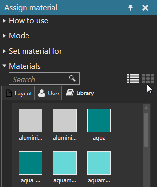

Displaying Materials
You can display available materials as either a list or grid.
- On the Modeling tab, in the Geometry group, click the Tools arrow, and then under Material, click Assign.
- In the Assign material task pane, expand Materials, and then do one of the following:
- To list materials, click the List icon.
- To show a grid of materials, click the Grid icon.
Example. Display materials as a grid
